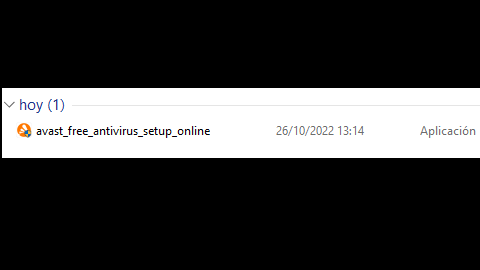
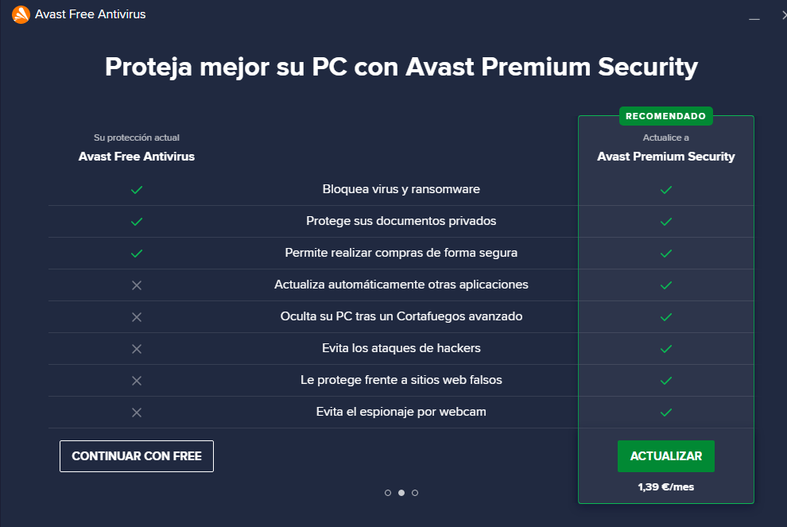
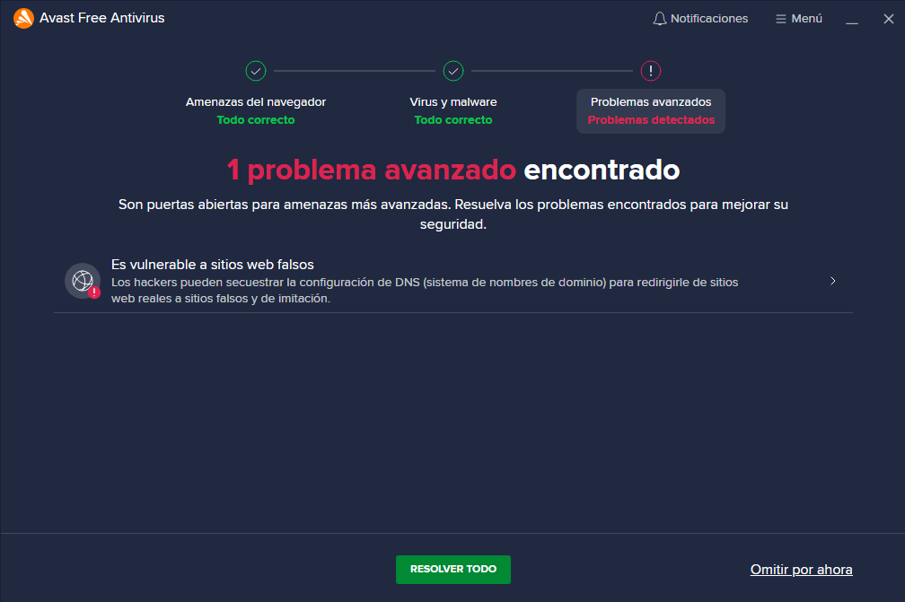

1ª Ejecutamos el instaldor
de avast

2ª Ejecutamos el instalador
y programa se iniciará haciendo
un escaneo del equipo.
Sin antes mostranos las ventajas de tener
su versión premium

3ª Después del primer escaneo
el programa nos dará los
resultados y se iniciará la aplciación
para poder usarla cuando queramos